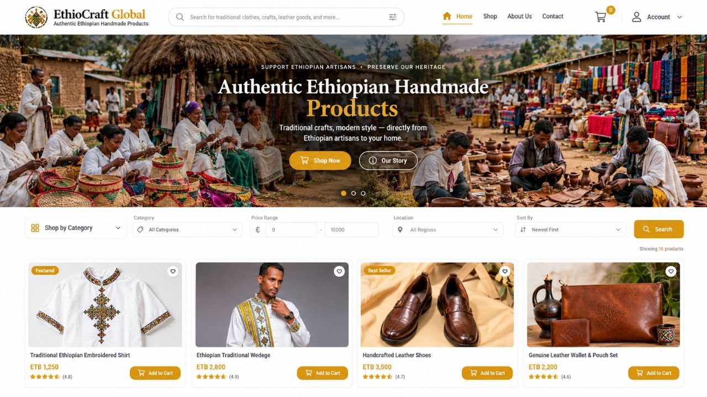
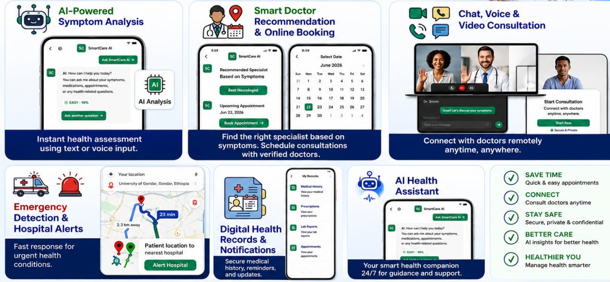
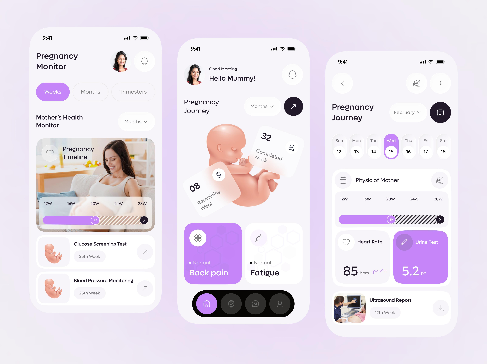
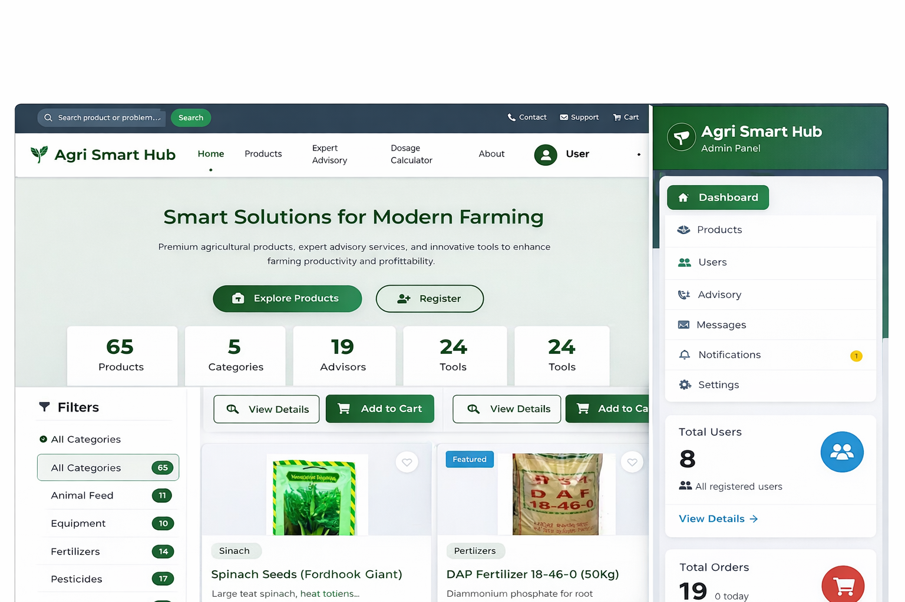

AI‑powered platforms, full‑stack systems, and academic work
Selected projects showcasing my work in full-stack development, AI-powered systems, and practical digital solutions designed to create real-world impact.
Selected projects showcasing my work in full-stack development, AI-powered systems, and practical digital solutions.

A digital marketplace connecting Ethiopian artisans with customers through online shopping, product management, and cultural storytelling—helping traditional craftsmanship reach wider markets.

A multilingual digital healthcare platform developed for a University of Gondar hackathon. It combines AI-assisted symptom assessment in English and Amharic, telemedicine, electronic health records, and intelligent hospital discovery.

A healthcare platform designed to support mothers and children through AI-assisted risk assessment, pregnancy tracking, emergency SOS, and digital collaboration between healthcare workers and doctors.

A web-based agricultural platform designed to help farmers access relevant agricultural information, explore crop guidance, and make better-informed farming decisions.
Identify real‑world pain points (tourism, agriculture, e‑commerce) and define AI use cases.
Collect/annotate data, design scalable schemas, and plan ML pipelines.
Build MVP with full‑stack (web/Android), integrate AI models, then refine.
Deploy, gather feedback, and present in competitions (like Startup 2025).
Recommendation systems, crop suitability models, basic NLP for travel.
Django, Flask, React, Android (Kotlin), REST APIs, database design.
Requirements, architecture diagrams, use case modeling, SRS documents.
Git, GitHub, Firebase, basic Docker, cloud deployment (render/heroku).
Building on my AI & full‑stack foundation
Voice‑based advisory in Amharic using fine‑tuned LLMs + real‑time weather.
Augmented reality overlay for historical sites, integrated with E‑Tour.
Alternative credit scoring using mobile transaction data for Ethiopian farmers.
Let's collaborate to build practical, intelligent, and impactful digital solutions.